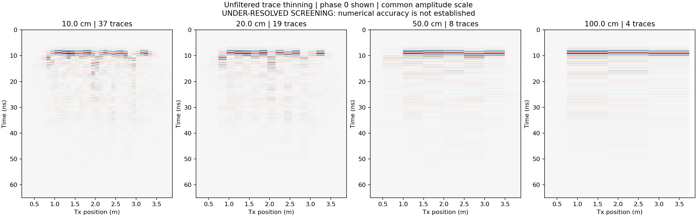

Horizontal · XY
Drag crosshair to position
Move a slider or drag a crosshair. Positions update all three sections and the 3D planes.
Procedural anatomy with hollow bone volumes, curved ribs, joint ends and shaped vessels. It is an assumed burial geometry, not a scan of an individual. The same volume primitives are exported for simulation. Hiding the lid affects the 3D display only.
Use the same seed and material model across frequencies. Thin one dense acquisition to test spacing without changing the subsurface.
Moisture, pore space and preservation control the response. A grave cut or void may dominate the skeletal signal.
Ideal Ricker-driven dipoles, no manufacturer-specific antenna. 2D TM sections imply infinite extent normal to the plane.
The electromagnetic cell, trace spacing, line spacing and time sampling are different quantities. Acquisition positions snap to the mesh; exports record the actual spacing.
All selected frequencies are exported. The table uses the same cell size, taphonomy and seed.
| Centre frequency | λ / 4 at centre¹ | Two-way soil loss⁴ | Sampling screen² | Suggested mesh³ | Cell / λ at upper band |
|---|
¹ Heuristic in background soil, not a resolution guarantee. ² v / (4 fmax), with fmax = 2.5 f0. ³ Minimum of λmin/15 and three cells across the smallest represented feature. Convergence tests are still required. ⁴ Plane-wave intrinsic loss to the coffin base and back; excludes spreading, interface losses and antenna response.
Water content is a volume fraction of bulk soil and must not exceed porosity. Bulk conductivity is an independent scenario parameter.
Initial dry solid endmembers: mineral 4.5, wood 3, bone 7, pottery 5.5. Edit the calibration below using site or sample measurements.
Editable prior values, not measurements of this burial. Water temperature is fixed at 20°C in this version. The PEC core and isotropic dry solids omit magnetic and directional effects.
| Material | ε′ at view frequency | σDC (S/m) | Total effective σ (S/m) | Interpretation |
|---|
ε* = ε′ − iε″. σeffective = σDC + 2πfε₀ε″. The exporter fits a passive, non-negative three-pole Debye representation to the complex CRIM curve over 50 MHz–5 GHz, and records the fit error. This mixing approximation excludes a calibrated clay/bound-water model.
Use Export model above, download the toolkit and place your model.json beside burial_gpr.py. Keep the original JSON as your experiment record.
Use Python 3.11–3.13; Python 3.12 is recommended.
python -m venv .venv # Activate .venv for your operating system python -m pip install -r requirements.txt python burial_gpr.py estimate model.json
python burial_gpr.py generate model.json --out runs python burial_gpr.py run runs --limit-traces 3 --threads 4 python burial_gpr.py collect runs
The trace limit is a workflow test at the start of the profile. Omit it for complete coverage. For a smaller first experiment, substitute quickstart.json. Generation blocks an under-resolved mesh; --allow-underresolved explicitly permits a labelled screening run.
python burial_gpr.py sampling \ runs/f500_line000_burial_scan.npz \ --spacings 0.01 0.02 0.05 0.10 \ --gate-start-ns 15 --gate-end-ns 60
Use integer multiples of the actual dense spacing recorded in the manifest. Tests include every possible starting phase and a common amplitude scale. The metric measures reconstruction error, not detection probability.
Start with a simple coffin / backfill 2D model; add one class of object at a time. Confirm the mesh and PML convergence, then compare orthogonal 3D profiles and both horizontal polarisations. A 3D raster uses generate … --raster; omitted, it exports a single 3D profile. A 2D section cannot establish 3D skeletal detectability. A detailed full-burial 3D mesh can require hundreds of GB or TB of RAM; check the estimate before generating a survey.
For a complete 3D raster, collection also saves a time × line × trace cube. Use integer multiples of its actual grid spacing:
python burial_gpr.py grid-sampling runs/f500_raster.npz \ --trace-spacings 0.01 0.02 0.05 \ --line-spacings 0.02 0.04 0.10 \ --gate-start-ns 15 --gate-end-ns 60
The comparison uses gated RMS amplitude maps and all starting phases. It does not estimate detection probability or create a migrated depth slice.
Metric primitives approximate the reference layout. The shared procedural anatomy contains cranial and pelvic shells, curved ribs, vertebrae, joint ends and hollow long bones. Vessels have shaped, sediment-filled hollow profiles with openings. Coffin wood becomes a mixture of residual wood and replacement infill. Subsidence has a geometric floor to prevent the lid passing through the rigid contents. Corrosion is represented by a shrinking PEC core and a lossy halo; magnetic dispersion and detailed electrochemistry are excluded.
The age laws and scenario presets are hypotheses. A 1,300-year burial need not retain an intact coffin or air void, and preservation can differ markedly between nearby graves. Calibrate moisture, conductivity, burial depth and preservation first.
These traces were computed in gprMax 4.0.1. The deliberately coarse 20 mm mesh and 10 cm base interval test the export, solver and analysis pipeline. They do not establish feature detectability. The toolkit contains the raw arrays, exact inputs and manifest.

All panels share one amplitude scale; phase 0 is shown. The JSON metrics include all starting phases.
The Python generator performs complete validation before export.